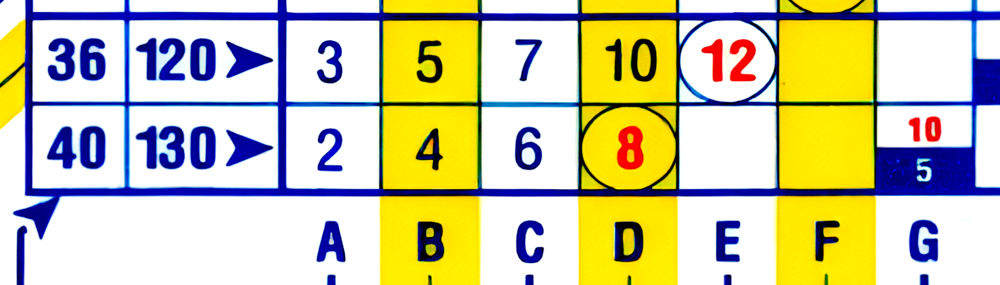
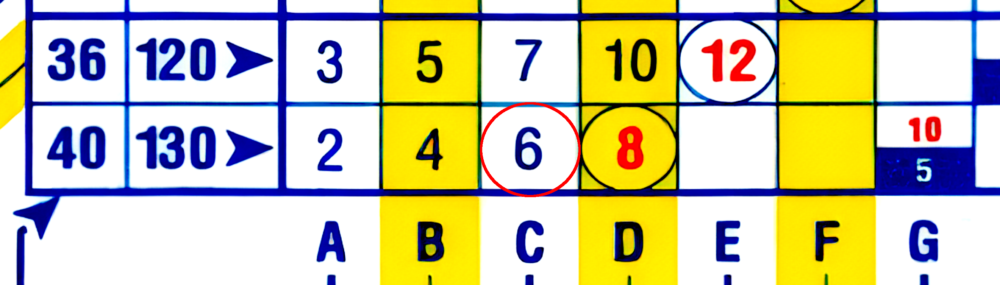
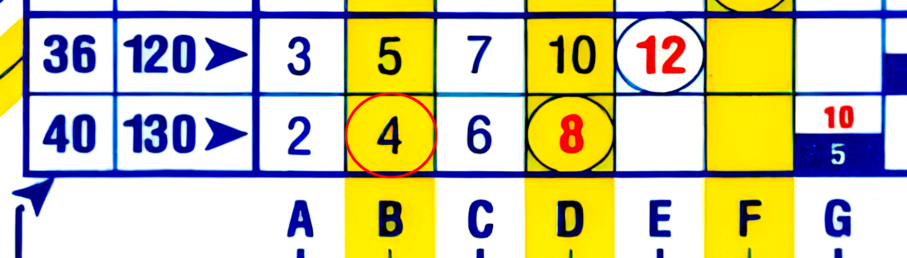

ダイバーのみなさん、こんにちは。元 NAUI アシスタント・インチキラクターの大山 (a.k.a. OrzBruford, miyamafukashi, OrzDiver) です。
早速ですが、みなさんは潜水計画、ダイブプランを立ててダイビングをしていますか？
を、ちゃんとプランを立ててそれに沿ってダイビングをしている、いいですねぇ。えらい！！
え？そんなのガイドがやってくれるもんでしょ？いかんですねぇ。その考えってとっても危ないですよ。
いざとなったらガイドやインストラクターの手が届かないことが大半です。頼りになるのは自分自身とバディだけです。バディと協力して、自分自身で安全に潜れるダイバーを目指してください。ダイビングでは特別な場合でない限り、自分自身とバディの判断と意思決定が、ガイドやインストラクターの判断と意思決定より優先されます。そのことはオープンウォーターでやってますよ？思い出してくださいね。
今日はオープンウォーターの復習がてら、ダイブプランニングについておさらいしていきたいと思います。PADI 以外の人はこんなのやってない、って話もでてきますので、是非とも読んでいってください。ためになります。NAUI でやってきたぼくが、PADI のカリキュラムを知って、やるな PADI と思ったので、これはほんとお勧めです。
イマドキのダイブプランは 2 本建てでプランニングします。
ひとつはこれまで誰もがやってきた (やってきましたよね？) DECO マネージメントですね。これは減圧症を防ぐことを念頭においたダイブプランニングでした。
でもこれだけでは不足と考えた PADI は、ダイブプランニングにエア・マネージメントを加えました。もともとテクニカル・ダイビングの世界で常識とされる考え方なのですが、それを PADI はレクリエーショナル・ダイビングの世界に導入したのです。やるな、PADI。
DECO マネージメントの考え方は従来のダイブプランニングの根幹をなしていました。要はダイブコンピュータのプランニングモードやダイブテーブルを使って、NDL や MDT を越えないダイブプランを立てましょうってことでした。
たとえば和歌山県みなべ町のショウガセに入って、水深 -40m 近くに生息しているオオカワリイソギンチャクを見に行くとします。そんな危ないことはやめとけ、ってぼくの心の声が叫ぶのですが、止めても行く人は行くでしょう。
そもそも現在あれだけみごとだったオオカワリイソギンチャクの群落がほぼ絶滅状態で見れるのは海底の岩だけ、と言ってもやはり行く人は行くのでしょう。そしてボートに戻ってから、岩しかなかった……ってつぶやくのでしょう。
それだけでなく「なんだか関節が痛い気がする」とか「なんか呂律が回らないんだけど」とか呂律の回らない口で言ったりするのかもしれません。
ぼくは可能ならボートの上から、無理ならボートが戻ってから、あわてて救急車を呼んで再圧チャンバーのある病院にあなたを搬送してもらうことになります。
え？ぼくが大丈夫なのか？大丈夫に決まってるじゃないですか。そんな危ない水深に一緒に潜るわけないじゃないですか。ボートで待ってます。そんな場面になったら、だから止めたじゃん、って言って救急隊が到着するまで、あなたの容態の経過観察を続けます。
そうなるとわかっていたとしても、-40m 近くのオオカワリイソギンチャクがかつて群落を作っていた岩を見に行くとします。ぼくの過去のログブックをひっくり返してみるとショウガセでの最大水深は -39.4m とあります。こんな深いダイビングはもう二度とやりたくないのですが、なんでこんな深い水深でメジャーレスキューを何度もしなければ……ゲフンゲフン、ともかくそれを基準に考えます。
ダイブコンピュータのプランニングモードもダイブコンピュータと同じくボックスタイププロフィールを前提に NDL を出しますので、ここはダイブコンピュータより視覚的にわかりやすいダイブテーブルに登場してもらいます。

なつかしいですね。いや、なつかしいじゃないんですよ？ちゃんと用語も引き方も覚えておいてもらってないと困ります。
2 本目や 3 本目にショウガセの一番最深部に入るバカはいないと思うので、1 本目のダイビング、つまり反復潜水ではないダイビングだと仮定します。
さて、39.4m の最深部に潜る計画を立てるとき、ダイブテーブルは -40m の行で引くのでした。
MDT を見ると 8 分とあります。
わーい、-40m で 8分も！！
アホカーッ！！(ノ｀Д´)ノ彡┻━┻
ダイブテーブルに書かれた数字は総潜水時間、つまり潜降開始から水面に浮上した浮上時間までの総時間です。
あなたは潜降を開始してから 8 分で水面に戻ってこないといけません。通常のダイコンの浮上速度は 9m/min ですからそれを守って、さらに安全停止をして戻らなけばなりません。

それだけではありません。ダイブテーブルを使ってダイブプランを立てるときにどうするのか覚えていますか？そう。安全マージンのために MDT より 1 マス短い時間をダイブタイムとしなければならないのでした。
つまりあなたは 6 分で -40m まで潜り、9m/min で浮上して、-5m での 3 分の安全停止をして水面に浮上しなければなりません。

仮にこれで水温が低かったり、なにか理由があって (たとえばヒヤリハット状態のゲストのサポートとか！！) 激しく運動する必要がある場合を想定して、更に 1 マス短い時間を安全マージンとして採用しなければならないのでした。
するとあなたに与えられた総潜水時間は 4 分になり、安全停止時間の 3 分を引くと、あなたは潜降と浮上、そして -40m で過ごすのに 1 分という時間しか与えられていないということになります。
ダイブコンピュータを使ってプランニングすれば、も、もう少しマシな数字が、で、でてくるのでは……
とても残念なお知らせをしなければなりません。ダイブコンピュータのプランニングモードは、ダイブテーブルと同じくボックスタイププロフィールで NDL を出します。なのでダイブテーブルの 8 分とさほど変わらない、あるいはもっと短い NDL を出してくることもあります。
さぁ、あなたは水面と -40m との往復を安全停止 3 分を含めて、浮上速度 9m/min を守りながら総潜水時間 4 分で行うことができるか！？
と半分ギャグっぽく書いてきましたが、もしダイブコンピュータのプランニングモードが 8 分と出したら、ダイブプランでは本当に潜降開始から浮上までを 8 分で終えなければならないというプランを立てなければならないことになります。
とはいえ、実際のダイビングで潜降開始と同時に -40m に居るということは有りえません。ダイブコンピュータを使用するということはマルチレベルダイビングを行うということだからです。
なのでダイビング中はダイブコンピュータをダイブモードに切り替えて (実際には自動で切り替わる場合がほとんど)、ダイブコンピュータを常にモニターしてシーリング、いわゆる DECO Stop の指示を出さないダイビングを行う必要があります。
いいですか？途中でシーリングが出ても、浅い水深まで戻ったらシーリングが消えたからＯＫなのではありませんよ？常にシーリングを出さないダイビングをしないと、それは減圧症リスクがとても高いダイビングだということを忘れてはいけません。どんな水深であってもシーリングは出してはダメだということを忘れないでください。
-40m のショウガセの最深部で、のんびり写真なんて撮ってたらだめなのですよ？-40m で撮影したいのなら、通常のレクリエーショナル・ダイビングではなく、テクニカル・ダイビングに躊躇なく進むべきです。
いままで見てきたように DECO マネージメントという視点では、現実的なダイブプランを立案できません。ですからダイブコンピュータを利用したダイブプランニングはあくまで参考として、あくまで実際のダイビング中の NDL までの時間のモニタリングに注視するということになります。
つまりダイビング中のダイブコンピュータの表示を見て「まぁこれくらいはいいか」は絶対にないということになります。なので水深 -40m のショウガセの底で「どうせ DECO は消えるから、いいか」というのは絶対にダメだということです。
ダイブコンピュータを使った DECO マネージメントはやはりモニタリングが中心になり、ダイブブランモードがあるとはいえ、実用には程遠いと言わざるを得ません。
なので PADI がダイブプランの立案の軸を、DECO マネージメントからガス・マネージメントに移す決定をしたのは自然なことだと言えます。なぜ他の団体が追随しないのかぼくには理解できませんけど。
わが NAUI の人たちは昔からエア消費量の計算を奨励してきたよ、って言うかもしれません。確かに計算はしてもらってましたよ。ツアー中もログ付けのときにゲストに電卓を渡して計算してもらって記録してもらってました。
でもせっかく計算してもらったデータを使って、ダイブプランを立ててもらうってことをやってる人を見たことがありません。ぼくもやってませんでした。本当に反省です。ここは素直に PADI の人たちを見習うべきです。
ガス・マネージメントモードの項では 50 Bar Rule、The Rule of Thirds、そしてテクニカルダイビングの世界で行われているガス消費量などをもとにした Turn Pressure Rule について概観します。
ぼくたちレクリエーショナル・ダイバーは 50 Bar Rule をよく使います。でもこの 50 bar 残すという習慣の 50 という数字が何を意味するのかは、ほぼ考えてきませんでした。
ちょっとこれはあまりいいことではないのではないかと思わざるを得ません。そしていろいろ調べるうちにテクニカルダイビングを行う人たちの Turn Pressure Rule がそのヒントを与えてくれるのではないかと考えるようになりました。
今日のこの稿では 50 Bar の意味や The Rule of Thirds での 1/3 のガスをリザーブとして残すことの意味の検討は行いません。やたらと理屈っぽい話になることが予想されるからです。
今日のこの稿では、50 Bar Rule、The Rule of Thirds、Turn Pressure Rule のエア・マネージメントの考え方を紹介するに止めます。ただし Turn Pressure Rule については実際の計算方法も解説します。役に立つからです。
そしてダイビング毎の計算がやはり面倒だと感じてしまうので、ぼくが AI エンジンの Gemini の力を頼って書いたダイビング・カリキュレーターを紹介します。ぼくは元 IT エンジニアなので 0 からコードは書くことができましたが、やはり面倒だったので楽をしたかったわけです (爆)
コード自体のレビューは行っており、問題がないことは確認済みです。ご安心してご利用ください。
おそらくあなたのダイビングライフの役に立つはずです。
ダイビング・カリキュレーターは Apache License 2.0 で公開していますので、必要に応じて好きに改造していただけます。ライセンスに従って二次著作物を公開することもできます。
ぼく自身も移動を伴わないダイビングプロフィールに対応したガス管理計算機の追加を検討しています。
執筆中。お待ち下さい。